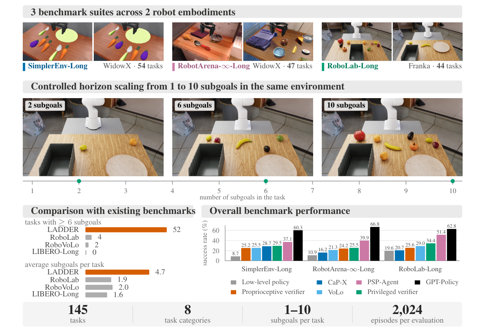
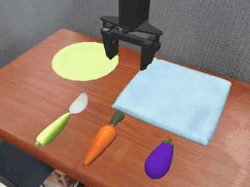
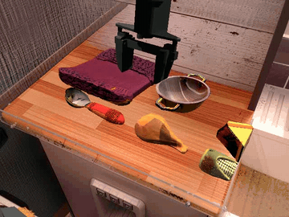
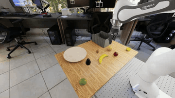
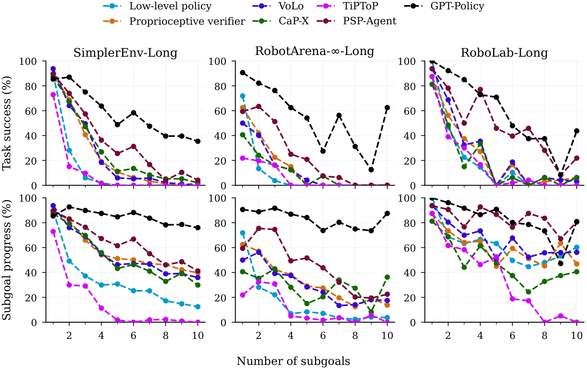
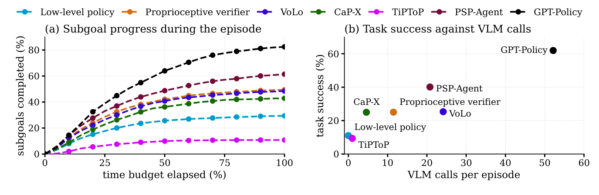
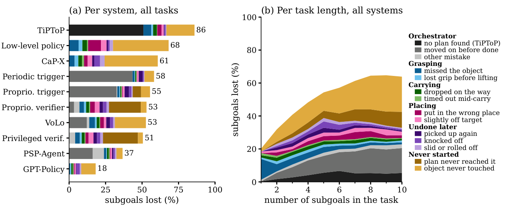
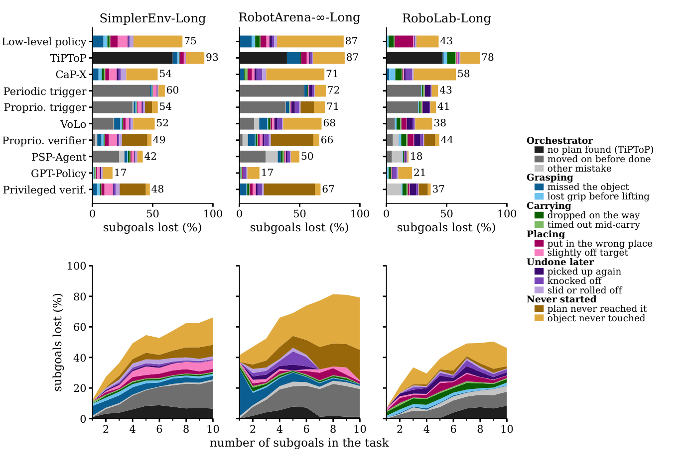
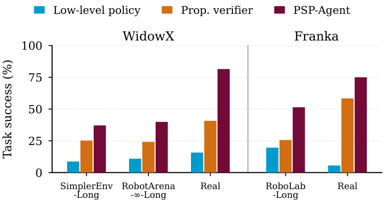

LADDER: A Long-Horizon Robot Manipulation Benchmark



Overview of our benchmark and key findings. Across all suites, orchestrating policy execution with sequential subgoal decomposition and visual verification substantially outperforms issuing the full instruction directly to the policy (bottom right). See Tables 1 and 3.
General-purpose robot manipulation policies learn short-horizon skills effectively, but degrade rapidly on long-horizon tasks. Existing benchmarks cannot isolate failures because task horizon is either too short or entangled with scene and object variations. We propose LADDER, a long-horizon robot manipulation benchmark scaling from 1 to 10 subgoals within the same environment over three suites (SimplerEnv-Long, RobotArena-∞-Long, and RoboLab-Long), 145 tasks, eight categories, two embodiments, and 2,024 simulated episodes per system. We evaluate two orchestration paradigms: text subgoals for learned low-level policies (VoLo) and tool selection orchestration (CaP-X, GPT-Policy, PSP-Agent, TiPToP). Given the full instruction directly, low-level policies achieve 85.4% on single-subgoal tasks, but drop to near zero on extended tasks. While orchestration remedies this, it remains bounded by physical execution errors of the low-level policy rather than high-level planning and achieves only ∼25%. Tool selection orchestration with GPT-Policy on GPT-6 Astra significantly outperforms learned-policy methods, but incurs significant time and cost budget and succeeds only ∼62%. Real-world experiments across two embodiments confirm the collapse of the low-level policy and the gain from orchestration. Project website: musical-garbanzo-5w422vy.pages.github.io
Three suites that extend established simulation benchmarks to long horizons. Each longer task adds one subgoal to a shorter one in the same scene.

4× speedSimplerEnv-Long
54 tasks · SAPIEN · WidowX 250
low-level policy: Bridge policy

4× speedRobotArena-∞-Long
47 tasks · Genesis · WidowX 250
low-level policy: Bridge policy

4× speedRoboLab-Long
44 tasks · Isaac Sim · Franka FR3
low-level policy: π0.5 (DROID)
What one instruction must express. Every subgoal is checked by a predicate on the simulator state.

Single destination 44 tasks
Every object goes to the same destination.
“put both carrots, the spoon and the eggplant on the plate”

Transfer 8 tasks
Every object starts on one destination and must be moved to another.
“move the carrot and the spoon from the plate to the blue towel”

Split destination 25 tasks
Different objects go to different destinations.
“put the lemon on the plate and put the orange in the bin”

Relay 20 tasks
Objects pass through an intermediate destination.
“first put the carrot on the plate, then put the carrot on the blue towel”

Revisit 13 tasks
Objects return to a destination they have already left.
“first put the spoon on the cloth, then put the spoon in the pot, then put the spoon on the cloth”

Exclusion 13 tasks
Some objects must be left where they are.
“put everything except the eggplant on the plate”

Ordered 14 tasks
The placements must occur in a stated order.
“first put the banana in the bin, then put the orange in the bin”

Duplicates 8 tasks
Identical objects cannot be told apart in language.
“put both corn cobs on the cloth”
Success rates of all ten systems on every suite, task category and horizon.
Orchestration keeps policies on track
At 2 subgoals the Proprioceptive verifier succeeds on 58.4% of episodes, against 26.9% for the same low-level policy alone.
Most of the gap to the privileged verifier closes
The best orchestrators cut the low-level policy's gap to the privileged reference from 18.6 to 4.3–4.6 points.
Tool selection scales furthest
On 5-subgoal tasks PSP-Agent still succeeds on 27.3% of episodes, against 11.1% for the privileged verifier.
| System | SimplerEnv-Long | RobotArena-∞-Long | RoboLab-Long | Overall |
|---|---|---|---|---|
| End-to-end | ||||
| Low-level policy | 8.7 ±1.7 | 10.9 ±3.6 | 19.6 ±4.5 | 11.0 ±1.4 |
| Orchestrated low-level policy | ||||
| Periodic trigger | 17.4 ±2.2 | 15.2 ±4.0 | 25.6 ±4.8 | 18.4 ±1.7 |
| Proprioceptive trigger | 21.5 ±2.3 | 16.2 ±4.1 | 28.1 ±4.9 | 21.7 ±1.8 |
| Proprioceptive verifier | 25.2 ±2.4 | 24.2 ±4.6 | 25.6 ±4.8 | 25.0 ±1.9 |
| VoLo | 25.5 ±2.4 | 21.3 ±4.4 | 29.0 ±4.9 | 25.3 ±1.9 |
| Tool selection | ||||
| CaP-X | 28.7 ±2.5 | 16.2 ±4.1 | 20.7 ±4.5 | 25.0 ±1.9 |
| TiPToP | 6.7 ±1.5 | 11.2 ±3.6 | 17.3 ±4.3 | 9.4 ±1.3 |
| PSP-Agent | 37.1 ±2.7 | 39.9 ±5.0 | 51.4 ±5.2 | 40.1 ±2.2 |
| GPT-Policy | 60.3 ±2.7 | 66.8 ±4.9 | 62.8 ±5.2 | 62.0 ±2.1 |
| Privileged reference | ||||
| Privileged verifier | 29.5 ±2.5 | 25.5 ±4.6 | 34.4 ±5.1 | 29.6 ±2.0 |
| Episodes per configuration | 1,296 | 376 | 352 | 2,024 |
Task success rate (%) with 95% Wilson intervals. Green: best orchestrated low-level policy. Blue: best tool selection system.
| System | Single destination | Transfer | Split destination | Relay | Revisit | Exclusion | Ordered | Duplicates | Overall |
|---|---|---|---|---|---|---|---|---|---|
| End-to-end | |||||||||
| Low-level policy | 14.9 ±2.9 | 16.7 ±6.9 | 7.1 ±3.5 | 2.3 ±2.4 | 0.0 ±2.2 | 0.6 ±2.7 | 22.2 ±7.5 | 29.7 ±8.4 | 11.0 ±1.4 |
| Orchestrated low-level policy | |||||||||
| Periodic trigger | 23.5 ±3.4 | 14.6 ±6.7 | 11.5 ±4.1 | 10.9 ±4.0 | 1.2 ±3.0 | 31.0 ±7.4 | 28.5 ±7.9 | 24.2 ±8.1 | 18.4 ±1.7 |
| Proprioceptive trigger | 25.0 ±3.4 | 14.6 ±6.7 | 17.6 ±4.7 | 15.5 ±4.5 | 1.2 ±3.0 | 39.9 ±7.6 | 29.2 ±7.9 | 31.2 ±8.5 | 21.7 ±1.8 |
| Proprioceptive verifier | 31.0 ±3.6 | 15.3 ±6.8 | 17.2 ±4.7 | 21.4 ±5.0 | 3.0 ±3.8 | 39.3 ±7.5 | 35.4 ±8.1 | 30.5 ±8.4 | 25.0 ±1.9 |
| VoLo | 31.0 ±3.6 | 27.1 ±7.8 | 20.6 ±5.0 | 16.1 ±4.6 | 3.6 ±4.0 | 32.7 ±7.4 | 38.2 ±8.1 | 31.2 ±8.5 | 25.3 ±1.9 |
| Tool selection | |||||||||
| CaP-X | 23.5 ±3.4 | 43.8 ±8.2 | 16.2 ±4.6 | 32.2 ±5.4 | 8.9 ±5.3 | 31.0 ±7.4 | 27.1 ±7.8 | 25.8 ±8.2 | 25.0 ±1.9 |
| TiPToP | 12.9 ±2.8 | 10.4 ±6.1 | 12.2 ±4.2 | 0.3 ±1.5 | 0.0 ±2.2 | 10.7 ±5.6 | 12.5 ±6.4 | 11.7 ±6.7 | 9.4 ±1.3 |
| PSP-Agent | 44.0 ±3.8 | 36.1 ±8.1 | 50.7 ±5.7 | 24.3 ±5.1 | 6.0 ±4.7 | 48.8 ±7.5 | 56.2 ±8.2 | 52.3 ±8.6 | 40.1 ±2.2 |
| GPT-Policy | 61.8 ±3.7 | 68.8 ±8.0 | 60.5 ±5.7 | 71.7 ±5.3 | 43.5 ±7.6 | 60.1 ±7.6 | 65.3 ±8.1 | 58.6 ±8.7 | 62.0 ±2.1 |
| Privileged reference | |||||||||
| Privileged verifier | 33.8 ±3.7 | 26.4 ±7.7 | 24.3 ±5.2 | 27.3 ±5.3 | 4.8 ±4.4 | 42.3 ±7.6 | 39.6 ±8.2 | 33.6 ±8.6 | 29.6 ±2.0 |
Task success rate (%) with 95% Wilson intervals. Green: best orchestrated low-level policy. Blue: best tool selection system.

Performance scaling across task horizon. Task success rate (top) and subgoal progress (bottom) as the horizon increases from 1 to 10 subgoals across all three benchmark suites (all ten systems: Tables 11 and 13).
Robot time and VLM compute of every system.
Most progress happens early
The Proprioceptive verifier completes 42.1% of all subgoals in the first half of the budget and 49.5% by its end. A longer budget would help little.
Successes finish with time to spare
Successful episodes of the learned-policy systems end after 36–45% of their time budget on average.
Success has a price
API cost per successful episode: PSP-Agent $0.33, GPT-Policy $6.49. The Proprioceptive verifier costs $0.045 per episode.

Robot time and compute. (a) Share of all subgoals completed as the simulated time budget elapses. (b) Task success against VLM calls per episode. Both combine all suites (per suite: Table 15; tokens and API cost: Appendix G).
| Low-level policy | Periodic trigger | Proprioceptive trigger | Proprioceptive verifier | VoLo | CaP-X | TiPToP | PSP-Agent | GPT-Policy | Privileged verifier | |
|---|---|---|---|---|---|---|---|---|---|---|
| VLM calls per episode | ||||||||||
| SimplerEnv-Long | 0.0 | 0.0 | 0.0 | 12.7 | 24.8 | 3.8 | 1.0 | 18.0 | 50.1 | 0.0 |
| RobotArena-∞-Long | 0.0 | 0.0 | 0.0 | 9.3 | 26.4 | 5.6 | 1.0 | 20.2 | 41.7 | 0.0 |
| RoboLab-Long | 0.0 | 0.0 | 0.0 | 9.3 | 19.2 | 6.3 | 1.0 | 31.8 | 70.8 | 0.0 |
| VLM calls per completed subgoal | ||||||||||
| SimplerEnv-Long | 0.0 | 0.0 | 0.0 | 4.9 | 10.1 | 1.6 | 2.8 | 6.1 | 11.8 | 0.0 |
| RobotArena-∞-Long | 0.0 | 0.0 | 0.0 | 7.3 | 22.2 | 5.1 | 2.1 | 10.7 | 13.3 | 0.0 |
| RoboLab-Long | 0.0 | 0.0 | 0.0 | 3.2 | 6.0 | 2.9 | 0.9 | 7.5 | 17.4 | 0.0 |
| Input tokens per episode (thousands) | ||||||||||
| SimplerEnv-Long | 0.0 | 0.0 | 0.0 | 17.2 | 70.5 | 7.5 | 2.0 | 27.3 | 357.8 | 0.0 |
| RobotArena-∞-Long | 0.0 | 0.0 | 0.0 | 12.6 | 75.0 | 12.9 | 2.0 | 31.2 | 293.5 | 0.0 |
| RoboLab-Long | 0.0 | 0.0 | 0.0 | 23.6 | 91.6 | 15.3 | 2.1 | 48.5 | 508.8 | 0.0 |
| Generated tokens per episode (thousands) | ||||||||||
| SimplerEnv-Long | 0.0 | 0.0 | 0.0 | 2.7 | 7.4 | 3.1 | 0.5 | 10.4 | 5.7 | 0.0 |
| RobotArena-∞-Long | 0.0 | 0.0 | 0.0 | 1.8 | 6.6 | 4.6 | 0.4 | 10.1 | 4.9 | 0.0 |
| RoboLab-Long | 0.0 | 0.0 | 0.0 | 2.5 | 7.2 | 5.1 | 0.4 | 16.4 | 8.3 | 0.0 |
| API cost per episode (USD) | ||||||||||
| SimplerEnv-Long | 0.000 | 0.000 | 0.000 | 0.046 | 0.161 | 0.034 | 0.007 | 0.119 | 3.861 | 0.000 |
| RobotArena-∞-Long | 0.000 | 0.000 | 0.000 | 0.032 | 0.162 | 0.054 | 0.006 | 0.123 | 3.177 | 0.000 |
| RoboLab-Long | 0.000 | 0.000 | 0.000 | 0.054 | 0.191 | 0.061 | 0.006 | 0.196 | 5.501 | 0.000 |
| API cost per successful episode (USD) | ||||||||||
| SimplerEnv-Long | 0.00 | 0.00 | 0.00 | 0.18 | 0.63 | 0.12 | 0.10 | 0.32 | 6.40 | 0.00 |
| RobotArena-∞-Long | 0.00 | 0.00 | 0.00 | 0.13 | 0.76 | 0.33 | 0.05 | 0.31 | 4.76 | 0.00 |
| RoboLab-Long | 0.00 | 0.00 | 0.00 | 0.21 | 0.66 | 0.30 | 0.04 | 0.38 | 8.76 | 0.00 |
| Subgoals completed by half of the time budget (%) | ||||||||||
| SimplerEnv-Long | 21.3 | 37.8 | 42.3 | 44.1 | 40.3 | 38.4 | 6.0 | 42.9 | 60.9 | 47.8 |
| RobotArena-∞-Long | 10.5 | 25.4 | 24.4 | 24.6 | 26.7 | 19.4 | 12.6 | 37.9 | 60.2 | 24.4 |
| RoboLab-Long | 53.1 | 52.6 | 50.2 | 48.4 | 53.6 | 41.6 | 22.3 | 78.4 | 78.1 | 55.9 |
| Subgoals completed by the end of the budget (%) | ||||||||||
| SimplerEnv-Long | 25.3 | 39.9 | 45.8 | 51.0 | 48.3 | 45.9 | 7.1 | 58.2 | 83.3 | 52.4 |
| RobotArena-∞-Long | 13.5 | 28.3 | 28.9 | 33.7 | 31.8 | 29.5 | 12.6 | 50.2 | 83.4 | 32.7 |
| RoboLab-Long | 56.6 | 57.1 | 58.9 | 56.1 | 62.0 | 42.4 | 22.4 | 81.6 | 78.7 | 63.3 |
API cost at list prices; it covers only the hosted VLM.
Why subgoals fail, and whether the orchestrator or the low-level policy is to blame.
With verification, the policy is the bottleneck
Only 7.1% of the Proprioceptive verifier's subgoals are lost to orchestrator decisions (13.8% for VoLo). Most failures come from never reaching the target object.
Long tasks fail because progress stalls
Half of the failed episodes complete no subgoal after the first 28% of the budget.
Agents also declare success too early
PSP-Agent marks 16.2% of its subgoals as done when they are not, and TiPToP finds no plan for 50.9% of its subgoals.

Why subgoals fail. Share of subgoals not completed at the end of the episode, by cause (Appendix H). A loss that an orchestrator decision made final is drawn as an orchestrator cause (grey; CaP-X and GPT-Policy log no decisions), every other loss by what happened to the object. (a) One bar per system, over all its episodes. (b) One point per task length, over all ten systems. Every value is computed within each suite and then averaged over the three suites (per suite: Figure 8).

Why subgoals fail, per benchmark. Share of each suite's subgoals not completed, split by cause. Top: one bar per system, over all tasks of the suite. Bottom: all ten systems together, by number of subgoals in the task; on RobotArena-∞-Long each length from 7 up rests on one or two tasks. Systems keep the same order in every panel.
Offline scores on 145 scenes and 562 labelled frames, without execution noise. Gemini 3.7 Flash, our default, has the best mean over the four capabilities (80.8%).
| Model | Planning exact match | Completion TP rate | Completion TN rate | State tracking all correct | Next subgoal valid | Tokens per query |
|---|---|---|---|---|---|---|
| Qwen3-VL-2B | 75.2 ±7.6 | 68.2 ±7.0 | 34.1 ±5.9 | 9.3 ±4.0 | 58.9 ±5.3 | – |
| Qwen3-VL-8B | 91.0 ±5.8 | 69.0 ±6.8 | 79.9 ±5.7 | 47.9 ±5.5 | 72.3 ±4.4 | – |
| Qwen3.5-9B | 86.9 ±6.5 | 44.4 ±6.3 | 96.9 ±2.5 | 11.7 ±3.7 | 63.2 ±4.8 | 5,173 |
| Qwen3.8-27B | 91.0 ±5.8 | 76.2 ±6.3 | 84.8 ±4.3 | 58.2 ±4.8 | 79.3 ±4.1 | 1,904 |
| Gemini 3.1 Pro | 89.7 ±6.0 | 54.8 ±6.6 | 96.0 ±2.9 | 68.7 ±4.3 | 75.2 ±4.5 | 583 |
| Gemini 3.7 Flash | 93.1 ±5.4 | 59.4 ±6.6 | 96.6 ±2.6 | 70.8 ±4.0 | 81.4 ±4.2 | 412 |
| Gemini Robotics-ER 2 | 90.3 ±5.9 | 54.0 ±6.5 | 97.8 ±2.3 | 69.6 ±4.2 | 76.6 ±4.1 | 510 |
| GPT-5.6 Sol | 93.1 ±5.4 | 72.8 ±6.3 | 86.4 ±4.3 | 56.4 ±4.7 | 82.0 ±4.3 | 282 |
| GPT-6 Astra | 91.7 ±5.7 | 71.1 ±6.2 | 86.4 ±4.4 | 53.2 ±5.1 | 85.4 ±4.0 | 203 |
| Claude Opus 5 | 90.3 ±5.9 | 68.6 ±6.6 | 87.9 ±4.1 | 61.0 ±4.7 | 79.8 ±4.4 | 400 |
Scores in % with 95% intervals. TP and TN rates: finished and unfinished subgoals judged correctly.
Does the ranking in simulation hold on physical robots?
WidowX 250 and Franka FR3
The low-level policy alone, the Proprioceptive verifier and PSP-Agent on tasks of 1 to 5 subgoals, 12 episodes per task and system.
Simulation is indicative
As in simulation, the low-level policy collapses fastest, and the three systems keep their order.
| Task category | Subgoals | Low-level policy | Prop. verifier | PSP-Agent |
|---|---|---|---|---|
| WidowX | ||||
| Single destination | 1 | 66.7 | 75.0 | 100.0 |
| Single destination | 2–3 | 0.0 | 33.3 | 87.5 |
| Split destination | 2–3 | 0.0 | 29.2 | 83.3 |
| Exclusion | 2 | 0.0 | 58.3 | 91.7 |
| Ordered | 2 | 8.3 | 33.3 | 41.7 |
| Duplicates | 2 | 0.0 | 0.0 | 58.3 |
| Franka | ||||
| Single destination | 5 | 0.0 | 8.3 | 25.0 |
| Exclusion | 2 | 0.0 | 83.3 | 100.0 |
| Ordered | 3 | 16.7 | 83.3 | 100.0 |

Real-robot evaluation. Left: task success (%) on the real robots per task category, 12 episodes per task and system. Right: overall task success in simulation (Table 3) and on the real robots. Both rank the three systems the same.
The three systems on the same tasks. Successes where a system has them on the longest tasks, otherwise its run that got furthest. Speeds are relative to the control rate (5 Hz WidowX, 15 Hz Franka); the real control loop ran somewhat slower than that.
“put both the eggplant and the cup on the cloth and put the carrot in the pot”
“put everything in the pot”
“first put the carrot on the cloth, then put the eggplant on the cloth”
“put both the eggplant and the cup on the cloth and put the carrot in the pot”
“put everything in the pot”
“first put the carrot on the cloth, then put the eggplant on the cloth”
“put both the eggplant and the cup on the cloth and put the carrot in the pot”
“put everything in the pot”
“first put the carrot on the cloth, then put the eggplant on the cloth”
“Put the corn, the carrot, the eggplant, the blue cup and the banana in the bowl”
“First put the blue cup on the plate, then put the blue cup in the bowl, then put the banana on the plate, then put the banana in the bowl”
“Put the carrot and the blue cup in the bowl and put the eggplant on the plate”
“Put the corn, the carrot, the eggplant, the blue cup and the banana in the bowl”
“First put the blue cup in the bowl, then put the carrot in the bowl, then put the eggplant in the bowl”
“Put the corn, the carrot, the eggplant, the blue cup and the banana in the bowl”
“First put the blue cup in the bowl, then put the carrot in the bowl, then put the eggplant in the bowl”
Episodes from the released evaluation. The label on each video gives its playback speed against the robot's real time.
54 tasks · SAPIEN · WidowX 250 · low-level policy: Bridge policy
Highlights: long tasks solved without a single mistake
CaP-X
“first put the carrot on the plate, then put the spoon on the plate, then put the eggplant on the plate, then put the carrot on the blue towel, then put the spoon on the blue towel, then put the eggplant on the blue towel, then put the carrot on the plate, then put the spoon on the plate, then put the eggplant on the plate, then put the carrot on the blue towel”
PSP-Agent
“first put the carrot on the plate, then put the spoon on the plate, then put the eggplant on the plate, then put the carrot on the blue towel, then put the spoon on the blue towel, then put the eggplant on the blue towel, then put the carrot on the plate”
VoLo
“first put the carrot on the plate, then put the carrot on the blue towel, then put the spoon on the plate, then put the spoon on the blue towel, then put the eggplant on the plate, then put the eggplant on the blue towel”
One scene, growing horizon
“put the carrot on the plate”
“put both carrots, both spoons and the eggplant on the plate”
“put the four carrots, the three spoons and the three eggplants on the plate”
“put the carrot on the plate”
“put both carrots, both spoons and the eggplant on the plate”
“put the four carrots, the three spoons and the three eggplants on the plate”
“put the carrot on the plate”
“put both carrots, both spoons and the eggplant on the plate”
“put the four carrots, the three spoons and the three eggplants on the plate”
“put the carrot on the plate”
“put both carrots, both spoons and the eggplant on the plate”
“put the four carrots, the three spoons and the three eggplants on the plate”
“put the carrot on the plate”
“put both carrots, both spoons and the eggplant on the plate”
“put the four carrots, the three spoons and the three eggplants on the plate”
“put the carrot on the plate”
“put both carrots, both spoons and the eggplant on the plate”
“put the four carrots, the three spoons and the three eggplants on the plate”
“put the carrot on the plate”
“put both carrots, both spoons and the eggplant on the plate”
“put the four carrots, the three spoons and the three eggplants on the plate”
“put the carrot on the plate”
“put both carrots, both spoons and the eggplant on the plate”
“put the four carrots, the three spoons and the three eggplants on the plate”
“put the carrot on the plate”
“put both carrots, both spoons and the eggplant on the plate”
“put the four carrots, the three spoons and the three eggplants on the plate”
“put the carrot on the plate”
“put both carrots, both spoons and the eggplant on the plate”
“put the four carrots, the three spoons and the three eggplants on the plate”
Task categories
Proprioceptive verifier
“put both carrots, both spoons and the eggplant on the plate”
Proprioceptive verifier
“first put the carrot on the plate, then put the carrot on the blue towel, then put the spoon on the plate, then put the spoon on the blue towel, then put the eggplant on the plate”
GPT-Policy
“first put the carrot on the plate, then put the spoon on the plate, then put the eggplant on the plate”
47 tasks · Genesis · WidowX 250 · low-level policy: Bridge policy
Highlights: long tasks solved without a single mistake
GPT-Policy
“put the blue bowl, the sushi toy, the cheese, the banana and the mushroom on the purple cloth”
PSP-Agent
“put the blue bowl, the sushi toy, the banana and the cheese on the purple cloth”
VoLo
“put the blue bowl, the sushi toy, the cheese and the banana on the purple cloth”
One scene, growing horizon
“put the blue bowl on the purple cloth”
“put the blue bowl, the sushi toy and the banana on the purple cloth”
“put the blue bowl, the sushi toy, the cheese, the banana, the mushroom and the corn cob on the purple cloth”
“put the blue bowl on the purple cloth”
“put the blue bowl, the sushi toy and the banana on the purple cloth”
“put the blue bowl, the sushi toy, the cheese, the banana, the mushroom and the corn cob on the purple cloth”
“put the blue bowl on the purple cloth”
“put the blue bowl, the sushi toy and the banana on the purple cloth”
“put the blue bowl, the sushi toy, the cheese, the banana, the mushroom and the corn cob on the purple cloth”
“put the blue bowl on the purple cloth”
“put the blue bowl, the sushi toy and the banana on the purple cloth”
“put the blue bowl, the sushi toy, the cheese, the banana, the mushroom and the corn cob on the purple cloth”
“put the blue bowl on the purple cloth”
“put the blue bowl, the sushi toy and the banana on the purple cloth”
“put the blue bowl, the sushi toy, the cheese, the banana, the mushroom and the corn cob on the purple cloth”
“put the blue bowl on the purple cloth”
“put the blue bowl, the sushi toy and the banana on the purple cloth”
“put the blue bowl, the sushi toy, the cheese, the banana, the mushroom and the corn cob on the purple cloth”
“put the blue bowl on the purple cloth”
“put the blue bowl, the sushi toy and the banana on the purple cloth”
“put the blue bowl, the sushi toy, the cheese, the banana, the mushroom and the corn cob on the purple cloth”
“put the blue bowl on the purple cloth”
“put the blue bowl, the sushi toy and the banana on the purple cloth”
“put the blue bowl, the sushi toy, the cheese, the banana, the mushroom and the corn cob on the purple cloth”
“put the blue bowl on the purple cloth”
“put the blue bowl, the sushi toy and the banana on the purple cloth”
“put the blue bowl, the sushi toy, the cheese, the banana, the mushroom and the corn cob on the purple cloth”
“put the blue bowl on the purple cloth”
“put the blue bowl, the sushi toy and the banana on the purple cloth”
“put the blue bowl, the sushi toy, the cheese, the banana, the mushroom and the corn cob on the purple cloth”
Task categories
PSP-Agent
“put the spoon and the corn cob on the cloth and put the chicken drumstick in the pot”
GPT-Policy
“first put the spoon on the cloth, then put the spoon in the pot, then put the spoon on the cloth”
GPT-Policy
“put the three corn cobs on the cloth”
44 tasks · Isaac Sim · Franka FR3 · low-level policy: π0.5 (DROID)
Highlights: long tasks solved without a single mistake
CaP-X
“first put the orange in the bin, then put the pumpkin in the bin, then put the lychee in the bin, then put the lemon in the bin, then put the lime in the bin, then put the banana in the bin, then put the onion in the bin, then put the avocado in the bin”
GPT-Policy
“first put the lemon on the plate, then put the lemon in the bin, then put the lime on the plate, then put the lime in the bin, then put the banana on the plate, then put the banana in the bin”
GPT-Policy
“put the avocado, the banana and the lemon on the plate and put the orange, the lime and the onion in the bin”
One scene, growing horizon
“put the banana in the bin”
“put the banana, the orange, the lemon, the lime, the avocado and the onion in the bin”
“put the banana, both oranges, the lemon, the lime, the avocado, the onion, the lychee, the pumpkin and the pomegranate in the bin”
“put the banana in the bin”
“put the banana, the orange, the lemon, the lime, the avocado and the onion in the bin”
“put the banana, both oranges, the lemon, the lime, the avocado, the onion, the lychee, the pumpkin and the pomegranate in the bin”
“put the banana in the bin”
“put the banana, the orange, the lemon, the lime, the avocado and the onion in the bin”
“put the banana, both oranges, the lemon, the lime, the avocado, the onion, the lychee, the pumpkin and the pomegranate in the bin”
“put the banana in the bin”
“put the banana, the orange, the lemon, the lime, the avocado and the onion in the bin”
“put the banana, both oranges, the lemon, the lime, the avocado, the onion, the lychee, the pumpkin and the pomegranate in the bin”
“put the banana in the bin”
“put the banana, the orange, the lemon, the lime, the avocado and the onion in the bin”
“put the banana, both oranges, the lemon, the lime, the avocado, the onion, the lychee, the pumpkin and the pomegranate in the bin”
“put the banana in the bin”
“put the banana, the orange, the lemon, the lime, the avocado and the onion in the bin”
“put the banana, both oranges, the lemon, the lime, the avocado, the onion, the lychee, the pumpkin and the pomegranate in the bin”
“put the banana in the bin”
“put the banana, the orange, the lemon, the lime, the avocado and the onion in the bin”
“put the banana, both oranges, the lemon, the lime, the avocado, the onion, the lychee, the pumpkin and the pomegranate in the bin”
“put the banana in the bin”
“put the banana, the orange, the lemon, the lime, the avocado and the onion in the bin”
“put the banana, both oranges, the lemon, the lime, the avocado, the onion, the lychee, the pumpkin and the pomegranate in the bin”
“put the banana in the bin”
“put the banana, the orange, the lemon, the lime, the avocado and the onion in the bin”
“put the banana, both oranges, the lemon, the lime, the avocado, the onion, the lychee, the pumpkin and the pomegranate in the bin”
“put the banana in the bin”
“put the banana, the orange, the lemon, the lime, the avocado and the onion in the bin”
“put the banana, both oranges, the lemon, the lime, the avocado, the onion, the lychee, the pumpkin and the pomegranate in the bin”
Task categories
Proprioceptive trigger
“move the orange, the lemon and the lime from the plate to the bin”
Privileged verifier
“put everything except the red block and the blue block in the bin”
RoboLab-Long, 4 subgoals: “put the avocado and the banana on the plate and put the orange and the lime in the bin”. Episodes are sampled at random, so failures are shown where they occurred.
Low-level policy
Periodic trigger
Proprioceptive trigger
Proprioceptive verifier
VoLo
CaP-X
TiPToP
PSP-Agent
GPT-Policy
Privileged verifier
Given the whole instruction at once, the low-level policy stalls after the first subgoals. Driven by the Proprioceptive verifier, it completes the task.
Relay · 6 subgoals: “first put the lemon on the plate, then put the lemon in the bin, then put the lime on the plate, then put the lime in the bin, then put the banana on the plate, then put the banana in the bin”
Low-level policy failure
Proprioceptive verifier success
Ordered · 4 subgoals: “first put the orange in the bin, then put the lemon in the bin, then put the lime in the bin, then put the banana in the bin”
Low-level policy failure
Proprioceptive verifier success
Everything needed to run the benchmark and reproduce the paper.
@article{ladder2026,
title = {{LADDER}: A Long-Horizon Robot Manipulation Benchmark},
author = {Petkov, Petko and Albanese, Giuliano and Nikolov, Nikolay and Van Gool, Luc and Tremblay, Jonathan and Paudel, Danda Pani},
journal = {arXiv preprint arXiv:XXXX.XXXXX},
year = {2026},
url = {https://arxiv.org/abs/XXXX.XXXXX}
}